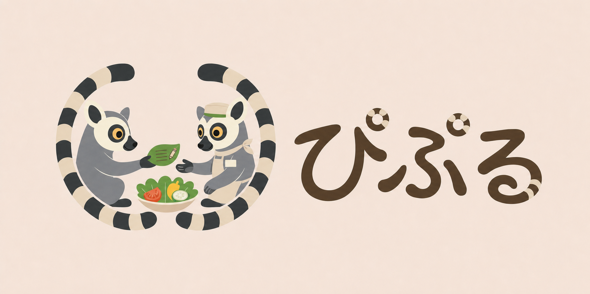

01 / MISSION
若い世代の声と行動を、解決策へ。
社会で諦められてきた課題に挑み、改善につながる仕組みを形にします。
ABOUT PRUVIA
団体名は「学生団体PRUVIA」、読みは「学生団体プルビア」です。
PRUVIA（読み：プルビア／ぷるびあ）は、社会の中に残る違和感を「仕方ない」で終わらせず、
仲間と考え、つくり、試しながら改善へつなげる学生プロジェクトです。
完成された答えを広める団体ではありません。 まだ答えのない課題に向き合い、小さな試作品と行動から、 より良い仕組みを育てていきます。
01 / MISSION
社会で諦められてきた課題に挑み、改善につながる仕組みを形にします。
02 / VISION
誰もが違和感を諦めず、改善の一歩に参加できる社会を目指します。
OUR PRINCIPLES
考え方を掲げるだけでなく、日々の活動で確かめるための約束です。
決めつけずに課題を見つめ、表面だけでなく背景や原因まで考えます。
一人の正解に頼らず、異なる考えを持つ仲間と解決策をつくります。
小さく試し、改善を重ね、必要としている人や社会まで届けます。
VALUES 聞く・考える・共につくる・形にする・試して改善する・必要な人へ届ける・チームを大切にする
HOW WE MOVE
一つの正解を決めつけず、考え、つくり、試しながら改善につながる方法を探します。
社会に残る違和感や、まだ十分に改善されていない問題に目を向けます。
問題の背景や原因を調べ、何を変えるべきかを考えます。
異なる考えを持つ仲間と話し合い、解決策を企画します。
Webサイトやサービス、企画など、実際に試せる形へ変えます。
実際の反応や結果を確かめ、より良い形へ改善します。
つくって終わらせず、必要としている人や社会へ届けます。
FIRST PROJECT / 01
利用者の「こうなったら、また利用したい」を、 お店の次の改善へつなげるサービスです。
誰かを評価して終わるのではなく、利用者とお店が一緒に、 より良い体験を育てる仕組みを目指しています。

DEVELOPMENT NOTE / 2026.08
利用者は「もう行かない」で終わらせず、次にどうなったら嬉しいかを投稿。 お店は要望を受け取り、検討や改善の過程、実現した結果を発信します。
評価する文化から、改善を育てる文化へ。
次にどうなったら嬉しいかを届ける
声を整理し、改善を検討する
対応や実現までの動きを共有する
改善を知り、次の来店につなげる
現在地 要望一覧・投稿導線まで試作済み
次は協力店舗と利用者による小規模な利用テストを行い、安全性・使いやすさ・双方にとっての価値を確かめます。
JOIN OUR TEAM
PRUVIAは現在、2名で立ち上げを進めています。 社会の問題と解決策の開発に、一緒に挑む初期メンバーの募集です。
学年・学部・経験は問いません。まずは話を聞くだけでも大丈夫です。
CONTACT
活動に少しでも関心がある方は、InstagramのDMからお気軽にご連絡ください。